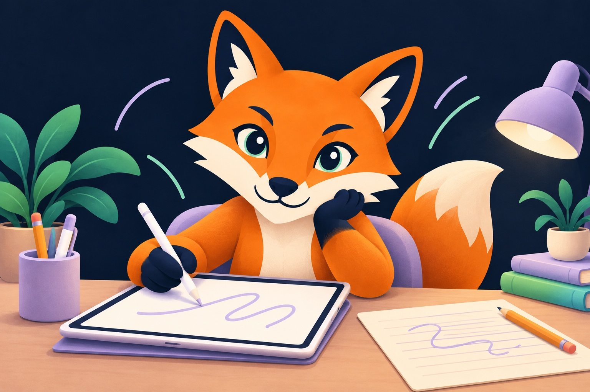
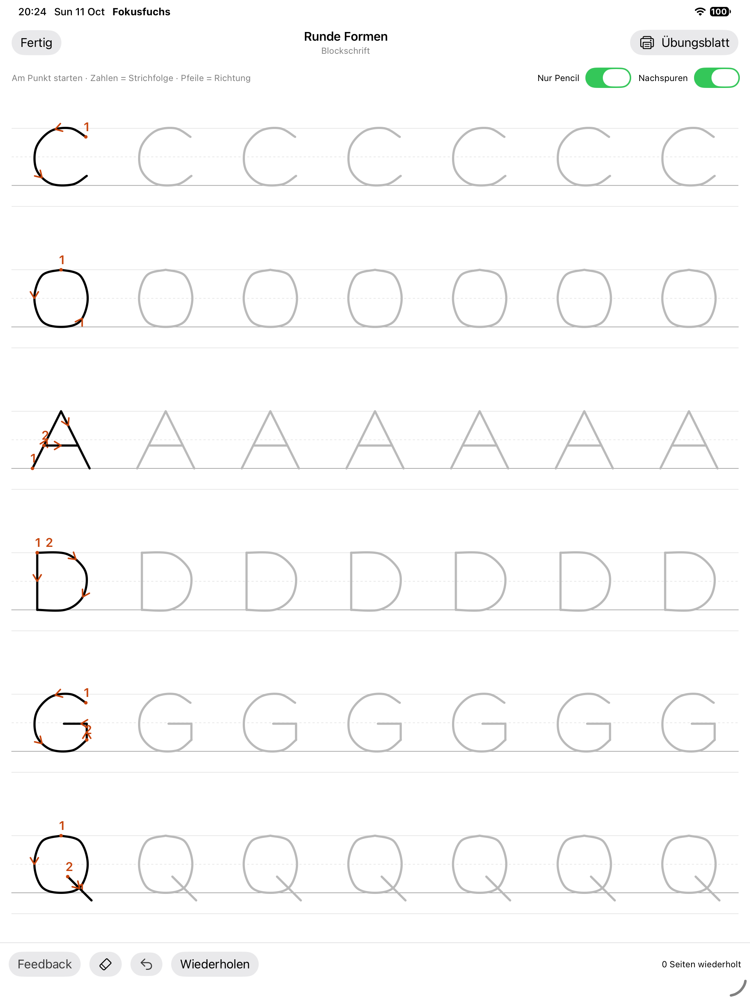
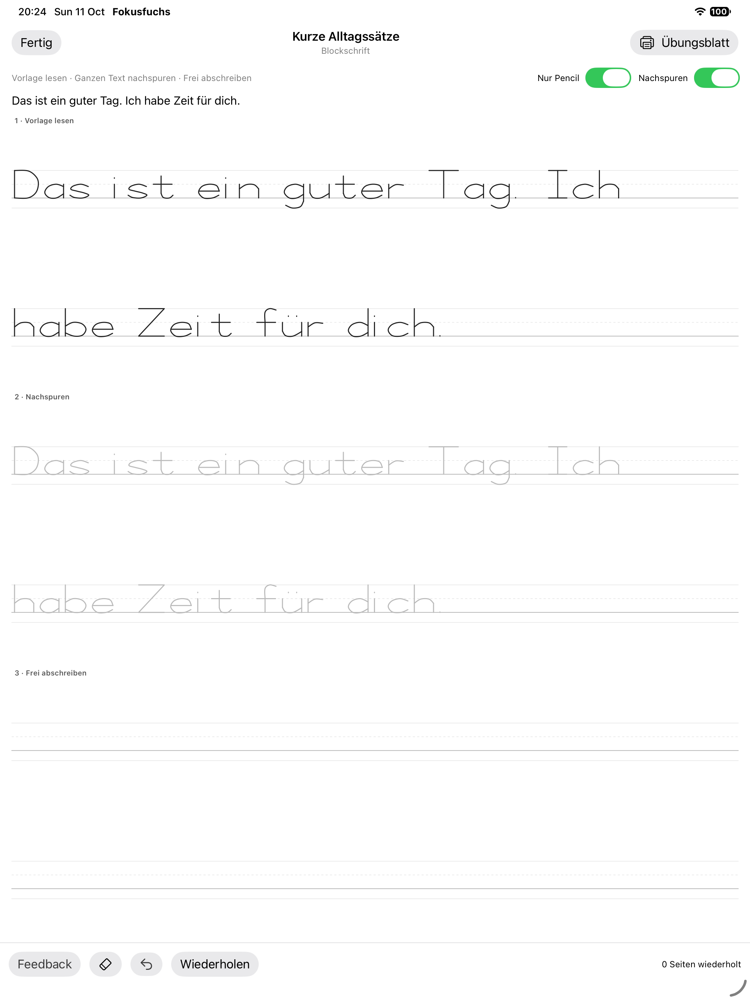

Drei Druckschrift-Stile
Blockschrift, runde Druckschrift oder geneigte Druckschrift. Gross- und Kleinbuchstaben, Umlaute und ß auf ganzen Zeilen üben.
Schreiben · Lernen · Fokus
Fokusfuchs 2.0 verbindet Handschrifttraining mit Lernspielen und bewusster Konzentration. Mit Apple Pencil, Finger oder auf Papier – in deinem eigenen Tempo. Nach der Rücknahme der ersten Einreichung entfernt Build 44 die Schreibschrift vollständig. Die korrigierte Version mit drei Druckschrift-Stilen wurde erneut bei Apple eingereicht und wartet auf die Prüfung. Bis zur Freigabe ist Version 1.4 erhältlich.

Neu in Version 2.0 · Build 44 wartet auf Apples Prüfung
Eine eigene Schreibwelt ergänzt deine Lern- und Fokusübungen. Direkt erreichbar auf „Heute“ und unter „Lernen“.
Blockschrift, runde Druckschrift oder geneigte Druckschrift. Gross- und Kleinbuchstaben, Umlaute und ß auf ganzen Zeilen üben.

Volle Hochformat-Schreibseiten auf dem iPad und dieselben Vorlagen als druckbare A4-Blätter. Finger-Eingabe ist ebenfalls möglich.

Häufige Wörter, Alltagssätze, das ganze Alphabet und Sonderzeichen. Zehn zusätzliche Übungsblätter gibt es auch als Paket.

Formnähe und Vollständigkeit helfen beim Nachspuren. Freie Handschrift und Strichreihenfolge werden nicht automatisch bewertet. Prozentwerte sind keine Schulnote.

Schreibseiten bleiben nur während der Übung erhalten. Es gibt dafür keine XP oder Rangliste. Die Bewertung erfolgt lokal auf deinem Gerät.

Zahlen, Lesen, Merkspiele und geführte Konzentrationsübungen ergänzen das Schreiben. Deine bestehenden Profile und Spiel-Ergebnisse bleiben erhalten.
Ein Blick auf die neue Schreibwelt
Echte Aufnahmen von Fokusfuchs 2.0 auf dem iPad. Wähle Buchstaben oder deutsche Sätze und übe auf dem Bildschirm oder auf Papier.


Bewusst trainieren
Aufmerksamkeit, Merkfähigkeit, Reaktionskontrolle und Alltagsorientierung stehen im Mittelpunkt.
Schulübungen für Zahlen, Lesen und Orientierung treffen auf einen eigenen Konzentrationsbereich für Kinder und Erwachsene.
Fokuszeit, Übungsvielfalt, XP, Fuchs-Level, Tagesziel, Serien und Abzeichen machen Entwicklung ohne Leistungsdruck sichtbar.
Profile und Ergebnisse bleiben auf dem Gerät. Fokusfuchs überträgt keine Trainingsdaten an den Anbieter.
Transparent & erreichbar